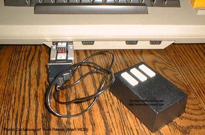

An engineer named Rich Pasco came over from Xerox PARC to Atari's Home
Computer Division (HCD). While working at Atari
he noticed something missing which he had become quite used to over at
Xerox. A "Mouse". Xerox was the developer
of the first GUI (Graphics User Interface) and also the first developer
of the "Mouse" pointing device. The Xerox Altos and Star 8010
utilitized desktop metaphors, point & click and all the other features
we have come to know and use today from companies such as Apple with its
Finder, Digital Research with its GEM for Atari ST's as well as PC's,
GUI's on Unix & Linux and Microsoft with its Windows.
Wanting to work in a more familiar and friendly user interface environment
on the Atari home computers, Rich Pasco went to Hawley Systems, a maker
of computer mice. He purchased a version of their mouse that would
interface with the Atari 800 front controller ports. After
writing a screen driver, he was able to move his mouse pointer all over
the screen to work in almost any programming language to do point and click
functions.
After working with the mouse and proving its effectiveness, Rich Pasco
approached the marketing department with the mouse and his driver in hopes
of persuading them to include a mouse with every Atari 800 sold (Rich's
compact driver could've easily have been integrated into the Atari OS ROM
board or loaded via disk or cassette). Marketing tried to work
with the mouse, but being used to playing with joysticks, this strange
foreign device was too difficult for them to understand and use so they
rejected his idea. Many talented and ingenious engineers such
as Rich created internal devices or interfaced existing components to Atari
systems within Atari and approached marketing with these ideas and were
rejected, a true shame in hindsight... but it has to be remembered
that at companies such as Atari, they were venturing into unknown and uncharted
territory in both design and marketing, so each idea was a gamble and many
times the luck of the dice rolled a craps.